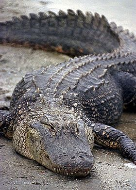

Nota: Todas as informações foram retiradas da Wikipédia

Jacaré, também chamado aligátor e caimão, são crocodilianos da família Alligatoridae, sendo muito parecidos com os crocodilos, dos quais se distinguem pela cabeça mais curta e larga e pela presença de membranas interdigitais nos polegares das patas traseiras. Diferenciam-se dos crocodilos ainda com relação à dentição, o quarto dente canino da mandíbula inferior encaixa num furo da mandíbula superior, enquanto que nos crocodilos sobressai para fora, quando têm a boca fechada. O tamanho de um jacaré pode variar de 1,2 metros (jacaré-anão) até 5,5 metros (jacaré-açu), podendo pesar de 6 Kg a 600 Kg. Os jacarés habitam as Américas, tendo desaparecido da Europa no Plioceno. Na América do Norte, apenas habitam da tipo Alligator.
O termo "jacaré" se origina do termo tupi "îakaré", ou "jaeça-karé", que significa "aquele que olha de lado" O termo "aligátor" origina do termo inglês "alligator", que provavelmente é uma forma anglicanizada do espanhol "el lagarto". Algumas variações antigas da escrita em inglês incluem "allagarta" e "alagarto". Já o termo "caimão" se origina do termo taino "kaiman". Caimão é um nome comum a diversos jacarés americanos do género Caiman.
Os jacarés se diferenciam dos crocodilos por possuírem uma cabeça mais curta e mais larga, com focinhos mais avantajados. Jacarés ingerem carne e peixe. O menor jacaré é o jacaré-anão, cujo comprimento varia entre 1,2 e 1,4 metros e pesa de 6 a 7 quilogramas. O aligátor-americano tem um tamanho médio de 3 a 4,6 metros, chegando até 5,3 metros e 400 quilogramas. O tamanho médio do jacaré-açu é de 2,8 a 4,2 metros, podendo alcançar os 6 metros e mais de 400 quilogramas.
O aligátor-americano (Alligator mississippiensis) é uma espécie típica dos Estados Unidos. O aligátor-chinês (Alligator sinensis) é encontrado no leste da China, na região do rio Yangtzé. Os jacarés da subfamília Caimaninae são encontrados na América do Sul, porém o jacaretinga (Caiman crocodilus) também é encontrado na América Central e sul do México.